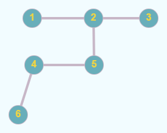

Un arbore este un graf conex și aciclic. Următoarele propoziții sunt adevărate:
- Un arbore cu n vârfuri are n-1 muchii.
- Un arbore este un graf conex și minimal cu această proprietate; dacă s-ar mai elimina o muchie, graful nu ar mai fi conex.
- Un arbore este un graf aciclic și maximal cu această proprietate; dacă s-ar mai adăuga o muchie, s-ar obține un ciclu.
- Între oricare două vârfuri ale unui arbore există un lanț elementar unic.

Pentru un arbore se poate stabili un nod special, numit rădăcină. Putem spune că “agățăm” arborele în rădăcină, iar restul nodurilor cad.
Fie un arbore cu rădăcina r și x un nod în acest arbore. atunci:
- se numește ascendent al lui x orice nod y, diferit de x, aflat pe lanțul de la rădăcină la x;
- rădăcina nu are ascendenți;
- rădăcina este ascendent pentru toate nodurile din arbore;
- dacă y este ascendent al lui x și există muchia (y, x), atunci y se numește ascendent direct al lui x sau tatăl lui x;
- rădăcina este singurul nod din arbore care nu are tată;
- un nod y este descendent al nodului x, diferit de y, dacă x aparține lanțului de la r la y;
- dacă în plus există muchia (x, y), atunci y este descendent direct sau fiu al lui x;
- un nod care nu are niciun descendent se numește frunză;
- două noduri care au același tată se numesc frați;
- lungimea unui lanț de la rădăcina arborelui la un nod x reprezintă nivelul sau adâncimea nodului x;
- lungimea maximă a unui lanț de la rădăcină la un nod al arborelui reprezintă înălțimea arborelui;
- un nod al arborelui împreună cu toți descendenții săi formează un subarbore;